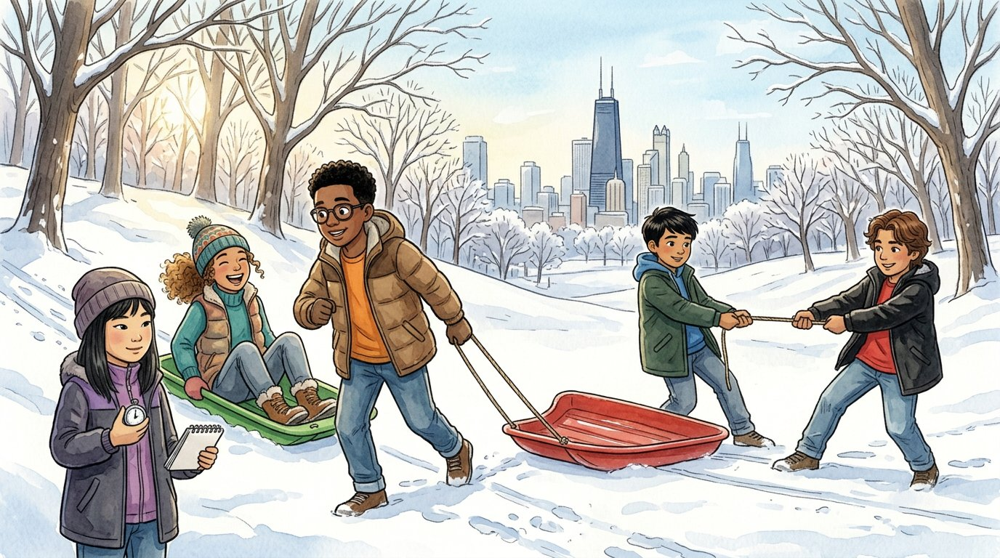

Grade 6 · Science · MS-PS2-2
The great sled race
A story about how forces and mass change the way things move.
La gran carrera de trineos. Un cuento sobre cómo las fuerzas y la masa cambian la manera en que se mueven las cosas.
Science words you will learn
Tap a green word to see what it means.
Toca una palabra verde para ver qué significa. Con la ayuda activada, verás también la definición en español.
The story
El cuento está en inglés. Pulsa «Listen to the story» para escucharlo y toca las palabras verdes cuando no entiendas una.
The first big snow of the year turned the hill at Humboldt Park into a sledding race track. "New rule," said Sophia, holding up a stopwatch. "This isn't just a race. It's an investigation for Ms. Rivera. We're testing what changes how a sled moves."
First, Daniel pulled an empty sled across the flat snow at the bottom of the hill. It slid easily. Then Athena sat on it, and he pulled with the same strength. The sled crawled. "With Athena on it, the sled has more ," said Sophia, writing it down. "The same pull makes a sled with more mass speed up more slowly."
"My turn!" said Israel. He grabbed one end of the rope on the second sled, and Elías grabbed the other end. They pulled as hard as they could in opposite directions. The sled didn't move at all. "Two equal in opposite directions," said Sophia. "They're , so they cancel out, and the motion doesn't change."
Then Daniel ran over and helped Israel pull. The sled shot toward them, and Elías landed face first in the snow. "Now the forces are ," said Sophia. "Two people pulling one way is more than one person pulling the other way, so the sled moves toward the bigger force."
At the top of the hill, they raced the sleds down. The sled on the icy path zoomed. The sled on the bumpy, grassy path slowed down halfway. "The grass and bumps make more ," said Athena. "Friction is a force too. It pushes against the motion and slows the sled down."
Elías, brushing snow off his face, had an idea. "Let's see who's fastest: me alone on one sled, or Daniel and Athena together on the other, on different paths." Sophia shook her head. "That's not a fair test. If we change the mass and the path at the same time, we won't know which one made the difference. We have to change only one at a time."
So they did it the scientist's way. Same path, same push from the top, one rider, then two riders. They ran each test three times, and Sophia wrote down every time on the stopwatch. The light sled always started faster with the same push.
On the walk home, Daniel looked at the notebook full of numbers. "So the whole investigation proves one thing," he said. "Forces and mass decide how things move." "And one more thing," said Elías, still shaking snow out of his hood. "Never be on the side with fewer people."
Glossary
- force
- A push or a pull. Forces can start, stop or change the motion of an object.
- fuerza: Un empujón o un jalón. Las fuerzas pueden poner en movimiento, detener o cambiar el movimiento de un objeto.
- mass
- The amount of matter in an object. More mass makes an object harder to speed up or slow down.
- masa: La cantidad de materia que tiene un objeto. Con más masa, cuesta más acelerarlo o frenarlo.
- balanced forces
- Forces that are equal in size and pull or push in opposite directions, so the motion does not change.
- fuerzas equilibradas: Fuerzas del mismo tamaño que empujan o jalan en direcciones opuestas, así que el movimiento no cambia.
- unbalanced forces
- Forces that do not cancel out, so they change the speed or direction of an object.
- fuerzas no equilibradas: Fuerzas que no se anulan, así que cambian la rapidez o la dirección de un objeto.
- friction
- A force that slows things down when two surfaces rub against each other.
- fricción: Una fuerza que frena las cosas cuando dos superficies se rozan.
- variable
- A part of an experiment that can change. In a fair test, you change only one variable at a time.
- variable: Una parte de un experimento que puede cambiar. En una prueba justa, se cambia una sola variable a la vez.
Questions
Choose the correct answer. If you make a mistake, the story shows you where the answer is.
Elige la respuesta correcta. Si te equivocas, el cuento te muestra dónde está la respuesta.
-
Question A. Why did the sled move more slowly with Athena on it?
¿Por qué el trineo se movió más despacio con Athena encima?
With Athena on it, the sled had more mass, so the same pull made it speed up more slowly.
-
Question B. Why didn't the sled move when Israel and Elías pulled?
¿Por qué no se movió el trineo cuando Israel y Elías jalaron?
The two forces were equal and in opposite directions, so they were balanced and canceled out.
-
Question C. What happened when Daniel helped Israel pull?
¿Qué pasó cuando Daniel ayudó a Israel a jalar?
Two people pulling one way was more than one person pulling the other way, so the forces were unbalanced and the sled moved.
-
Question D. Why did the sled on the grassy path slow down?
¿Por qué se frenó el trineo en el camino con pasto?
The grass and bumps made more friction, a force that pushes against the motion.
-
Question E. Why did Sophia say Elías's idea was not a fair test?
¿Por qué dijo Sophia que la idea de Elías no era una prueba justa?
Changing the mass and the path at the same time means you can't tell which one made the difference.
Challenge: explain your thinking
Plan an investigation
Plan a fair test to find out whether a heavier toy car or a lighter toy car speeds up more when you give each the same push. What will you change? What will you keep the same? What will you measure?
Planea una investigación. Planea una prueba justa para averiguar si un carrito de juguete más pesado o uno más ligero acelera más cuando les das el mismo empujón. ¿Qué vas a cambiar? ¿Qué vas a mantener igual? ¿Qué vas a medir?
Answer in your notebook or talk it over with a classmate. Use evidence from the story.
Responde en tu cuaderno o coméntalo con un compañero. Usa evidencia del cuento.
Check your thinking
Change only the mass (add clay or coins to one car). Keep the same: the push (for example, a rubber band pulled back the same distance), the surface, the starting line and the car model. Measure how far each car goes or how long it takes to cross a line, and repeat each test three times. The lighter car should speed up more with the same push.